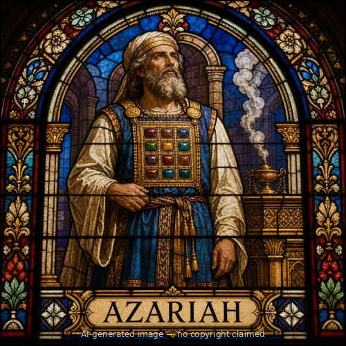

Azariah (M)
First named in 2 Chronicles 31:10
Azariah served as chief priest of the house of Zadok during King Hezekiah's reforms, a period when the king worked to restore proper worship in Judah after generations of neglect and idolatry under his father Ahaz (2 Chronicles 29-31). Hezekiah commanded the people of Jerusalem to give the portion due the priests and Levites so they could devote themselves to the law of the LORD, and the people responded with striking generosity, bringing tithes of grain, wine, oil, honey, and produce in such quantity that they piled up in heaps from the third month to the seventh (31:4-7). When Hezekiah saw the heaps, he asked the priests and Levites about them, and Azariah answered him directly: "Since the contributions began to be brought into the house of the LORD, we have had enough to eat with plenty left over, for the LORD has blessed His people, and what is left is this great quantity" (31:10). Hezekiah then ordered storerooms prepared in the temple to hold the surplus, and Levites were appointed to oversee its faithful distribution (31:11-15). Azariah's brief, direct report to the king is the only recorded moment of his own words in Scripture, but it captures a rare season of abundance flowing directly from the people's obedience -- a high priest testifying, in effect, that God had kept His promise to bless a repentant nation.
Thought for Today
Azariah testified that the people's generous obedience left the priests with more than enough. Jesus gives us grace in that same overflowing measure, more than we could need.
References: 2 Chronicles 31:10; Nehemiah 10:2
Genealogy
Father
—Mother
—Spouse(s)
—Children
—Other people named Azariah
